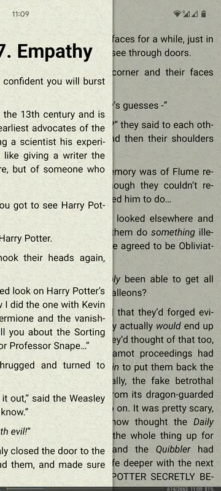
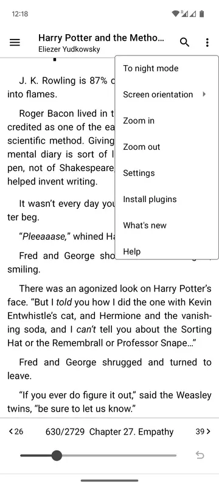

FBReader 要不要掏钱？免费版够用还是 Premium 值不值
拆一拆 FBReader 免费版和付费版的功能边界，按轻度阅读、主力使用、重度折腾三类人分别算账，帮你三秒决定这钱花不花。
它到底值不值得掏钱？这问题我在 Google Play 上翻了二十多条四星五星评论，又对比了差不多两月的使用习惯，最后把这笔账算明白了。
先说背景：FBReader官网 是个老牌电子书阅读器，主打多格式支持和高度可定制。它的商业模式很直接——一个 Android 免费版加一个 Premium 买断版，外加一个可选的 Book Network 云同步服务。没有订阅，没有内购广告，就是功能分层卖。这个定价策略本身挺干净，但干净不代表不鸡贼，得拆开看。
免费版给了什么，付费版多了什么
先把功能边界划清楚。免费版（包名 org.geometerplus.zlibrary.ui.android）和 Premium（包名 com.fbreader）的核心阅读引擎是同一套，排版、主题、手势这些东西两边都有。差异集中在几个地方：
免费版的硬限制：
- 不内置 PDF 支持。打开 PDF 会弹窗引导你去下载一个独立的 PDF 插件 APK，这个插件本身也是免费的，但版本要和主 APP 对上号，装完还要重启——不算麻烦，但就是多了一步。
- OPDS 目录数量似乎有限制？这点我没找到官方面板的明确数字，但社区有人反馈免费版加超过五个目录后偶尔会闪退。
- 云同步功能能不能用？免费版里是能看到 Book Network 入口的，但 Premium 用户有优先同步权，高峰时段免费用户可能排队。
Premium 多出来的：
- PDF 直接内置，开箱即用，排版引擎统一，不用装插件不用管版本匹配。
- 多用户配置文件——这个挺狠，你可以建一个"工作"配置（深色主题、小字号、无高亮）和一个"睡前"配置（护眼黄背景、大号字、自动滚页），一键切换。
- 后台 OPDS 自动更新目录。免费版得手动刷，Premium 可以定时拉取新书。
- 还有一些小功能：朗读 TTS 的语速和音调精细调节、书库备份到 Google Drive、高级搜索（按标签+作者+格式联合筛选）。

三类人分别算账
轻度用户：偶尔翻翻电子书
每周读书不超过两本，格式以 ePub 和 fb2 为主，PDF 很少碰。
免费版够不够？完全够。 你打开 PDF 的次数可能一个月才一两次，花三十秒装个插件不是什么不可接受的事。OPDS 目录你可能只加一两个常用的，数量限制触不到。云同步排队？你设备可能就一台手机，根本不需要同步。
算笔时间账： Premium 买断大概一顿工作餐的钱。你省掉的是什么？装插件的 30 秒、偶尔手动刷新 OPDS 的 10 秒、找不到朗读音调旋钮时的 5 分钟摸索。这些时间加起来一年可能不到一个小时。每小时的溢价超过一顿饭，不太划算。
结论：永远不用付。 免费版就是为你设计的。
主力用户：每天都读，PDF 是刚需
通勤一小时、睡前半小时，每周三四本书，格式混杂——既有从 OPDS 抓的免费 ePub，也有出版社买的 PDF，还有几本老 fb2 珍藏。设备至少两台（手机加电纸书）。
免费版开始卡壳。 PDF 每次打开都要等插件渲染，偶尔插件版本落后主版本导致打不开（我就遇到过一次，主 APP 更到 3.8.31 但插件还是 3.8.25，闪退了两次才反应过来，后来去FBReader文档翻了一下才弄明白版本号要对齐）。OPDS 目录加了七个之后，有一个老是加载失败不知道是目录挂了还是数量触顶。两台设备的进度同步高峰时段等了三分钟才完事。
Premium 能解决多少？ PDF 秒开，不用管插件版本。OPDS 自动刷新，早上起来新书已经在书库里了。同步几乎是即时的——我在手机上翻到第 127 页，电纸书拿起就自动跳过去了。配置文件这个点是意外收获：电纸书用 EInk 黑白主题，手机用蓝色护眼主题，换设备自动切，不用每次进设置改。
时间账： 每天省 2~3 分钟 PDF 等待和设置调整，一年就是 15~20 小时。把这些时间折算成你愿意为"省事儿"付的钱——如果一顿饭换 20 小时的省心你觉得值，那就值。
重度折腾党：收藏控 + OPDS 爬虫 + 多设备同步
书库里 300+ 本，OPDS 目录加了十几个（自己维护了一个私人的），三台设备（手机+电纸书+平板）同步，还折腾自定义主题和插件。
免费版是灾难。 OPDS 目录多了之后偶尔整个 APP 崩掉，不知道是内存问题还是免费版有意限流。手动刷目录刷到一半切出去看个微信，回来就白屏了。三台设备的同步冲突——手机上高亮了一段，电纸书上也改了批注，免费版的合并逻辑经常把其中一个覆盖掉。
Premium 不是可选，是必选。 后台定时拉 OPDS 让你不用管，多配置文件让不同设备保持各自的阅读习惯，多用户同步冲突解决比免费版靠谱太多。还有那个书库备份到 Google Drive——我之前免费版漏了这茬，刷机时丢了 100 本书的阅读进度和高亮，至今心疼。
时间账？算了，重度用户不该算时间账。 你花在折腾上的时间已经超过 Premium 的价格了，这笔钱是在止损。
替代方案：不付这笔钱的其他路
如果你看完上面还在犹豫，有几条替代方案值得考虑：
换其他免费阅读器。 Android 上比较靠谱的开源阅读器还有 Cool Reader、ReadEra、PocketBook Reader。Cool Reader 的 PDF 支持比 FBReader 免费版好（内置），主题定制一样强，但 OPDS 支持差一些。ReadEra 界面更现代，但高度可定制这块不如 FBReader。这个替代方案的代价是换一个生态——你之前在 FBReader 里建的书库分类和标注得手工搬。
降低使用频率。 把 PDF 用 Calibre 转成 ePub 再读，转换过程虽然麻烦一点（批量跑可以接受），但转完之后排版比 FBReader 的 PDF 重排质量还好。这个方案的代价是多了一步预处理流程，适合 PDF 量不大的情况。
等打折。 FBReader Premium 偶尔在 Google Play 上打折，最低到过三分之一。不急的话可以等促销季入手，时间窗口通常在 Google 的黑色星期五和圣诞节前后。

结论：三类人各归各位
最后给一个一秒决策表：
- 轻度偶尔读 PDF 的 → 永远免费，装个插件完事
- 每天固定阅读、PDF 混读、两台设备同步的 → 值得付，省心就是生产力
- 收藏控、OPDS 重度、多设备折腾的 → 必须付，免费版会让你想摔手机
我自己属于中间那类，付了之后没后悔过，但也没觉得"早知道早付了"那种程度——免费版确实能用，只是 Premium 让一些原本"忍忍就过"的小麻烦消失了。这种工具类软件的付费逻辑，本质上就是你对"忍麻烦"的容忍度值多少钱。
顺便说一下，桌面版和 iOS 版的 FBReader 不支持 PDF——这个是平台限制，跟免费还是付费没关系。如果你主要在这两个平台读 PDF，倒不如干脆用 Adobe Acrobat 或 Xodo，FBReader 专注看 ePub 就好。如果你想自己动手折腾或翻配置选项，这套资料在 GitHub、Gitee 和 GitCode 上都有归档，不同网络环境总能访问到。